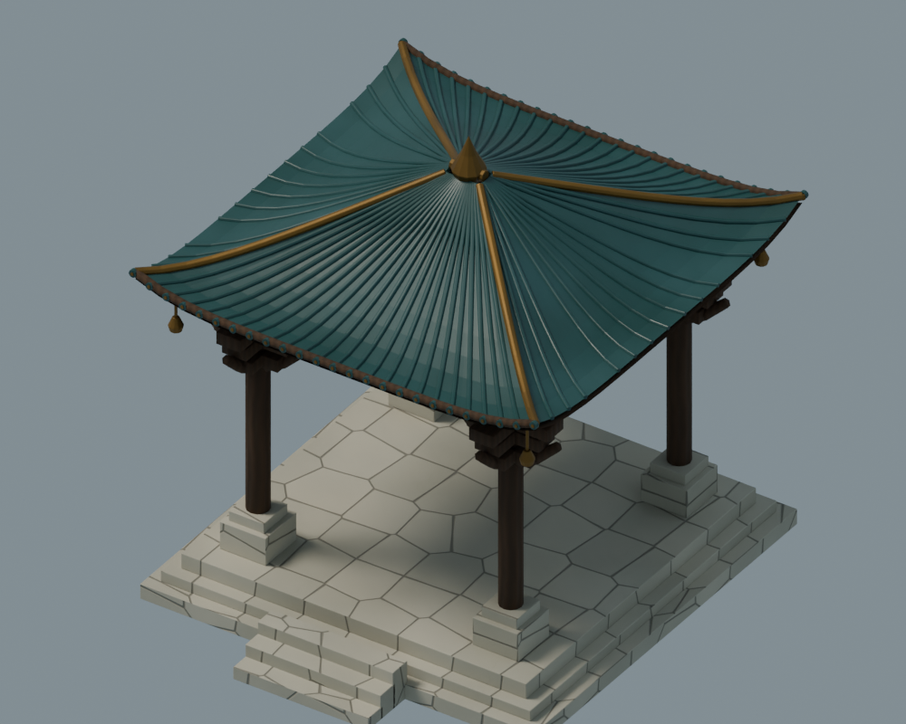
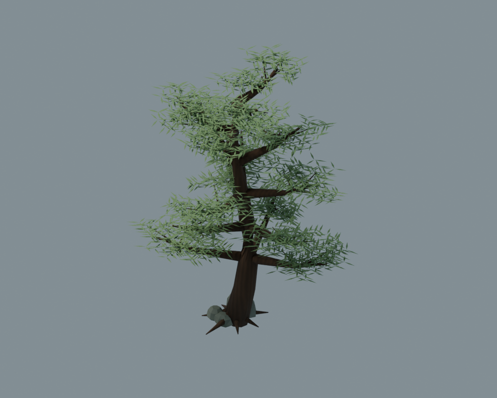
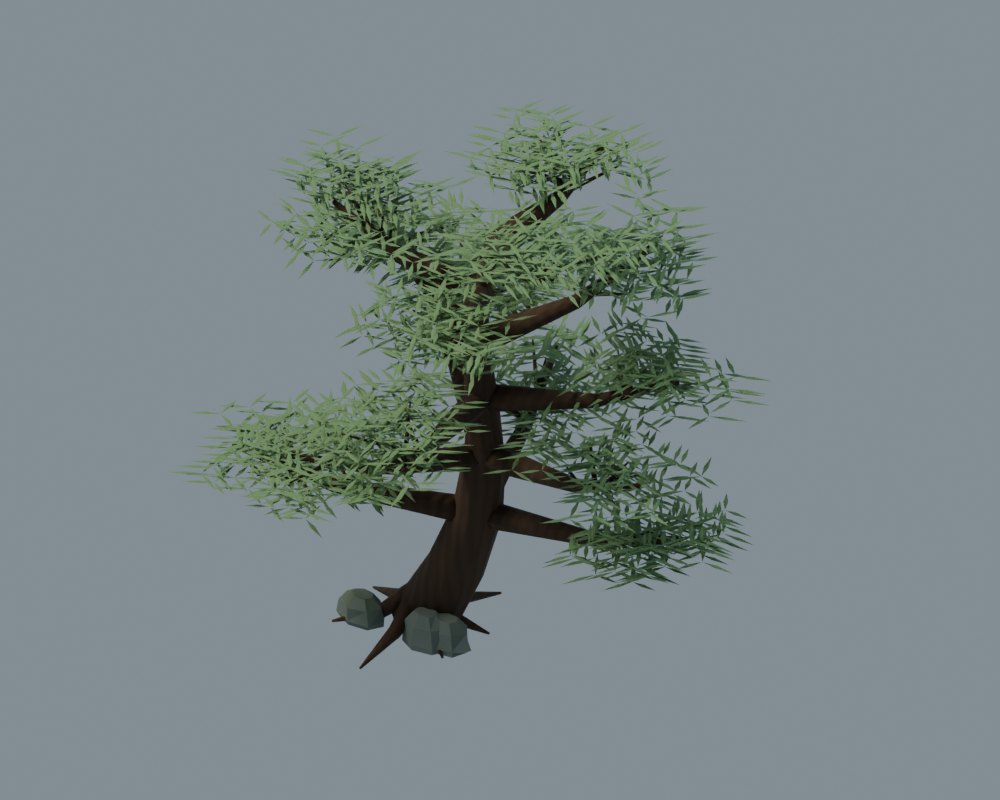
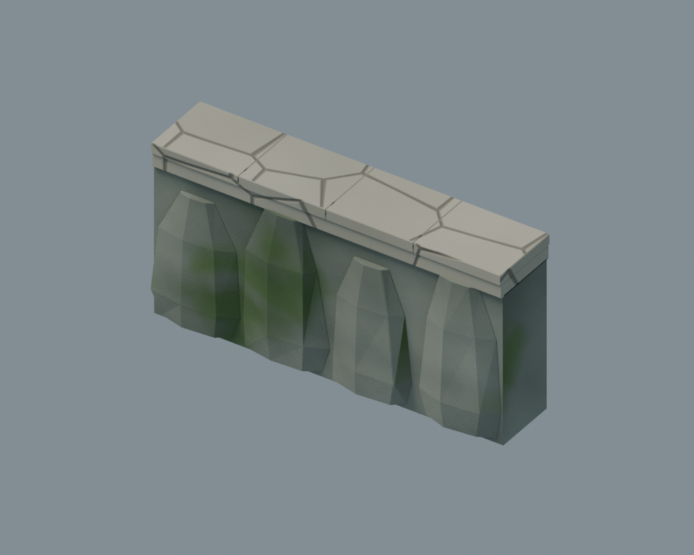
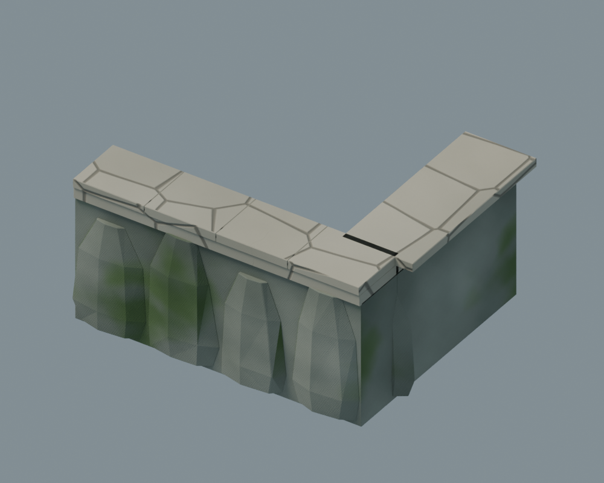
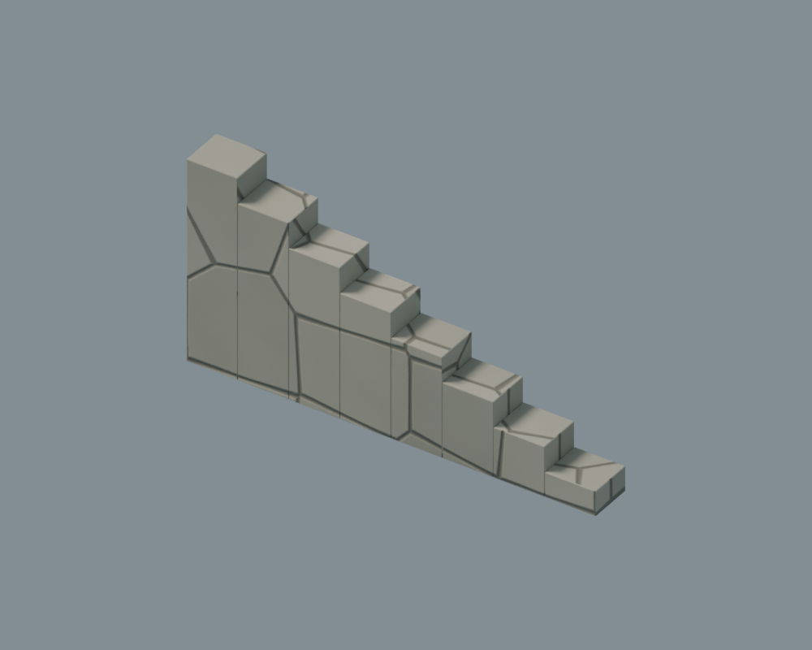

清晨云层与组件细化
实际 Dota 2 地图截图。外围使用四种厚云轮廓，内部使用低云带与薄雾；新版亭阁、扎根松树和台阶外侧收边已接入少量原有位置。
云由 Blender 密度场烘焙为独立透明资源，边缘与缩小后的透明通道已检查。运行时仍是朝向镜头的云片，光照已烘焙；侧看、绕看或大幅放大存在局限，不能当作真正的体积云。
实机通行与资源检查 · 云遮挡范围与地形一致性检查 · 组件几何检查
本轮 Blender 可复用组件
亭阁、两种松树和台阶侧边已用于主地图。直线与转角收边件已编译入资源库，供后续按具体边界装配。

a01_pavilion_detail
41,746 三角面 · 已确认材质
v01_pine_rooted_0
22,170 三角面 · 已确认材质
v01_pine_rooted_1
22,170 三角面 · 已确认材质
t08_platform_edge
730 三角面 · 已确认材质
t08_platform_corner
978 三角面 · 已确认材质
t08_stair_cheek
352 三角面 · 已确认材质Blender 组件源文件 · 云组件独立对照